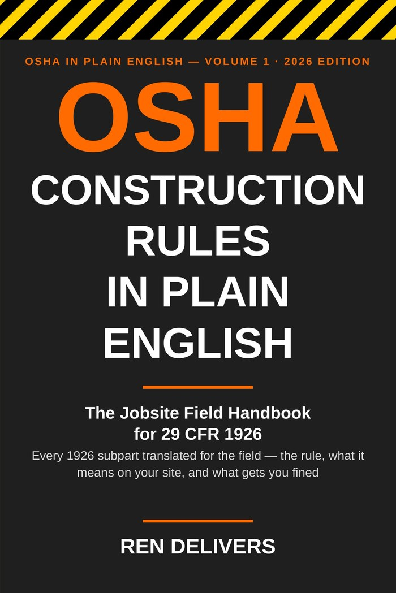

Short answer: Three feet. Under 29 CFR 1926.1053(b)(1), when a portable ladder is used to reach an upper landing, the side rails must extend at least 3 feet above the landing so the worker stepping off has something solid to hold. That one rule — plus the right angle, a secured top and bottom, and a ladder that actually gets inspected — is most of Subpart X in practice. Falls from ladders are a leading cause of construction deaths, and they almost never involve exotic failures: the ladder was too short, set too steep, or already broken.
The rule is mechanical: access, extension, angle, condition, training. Get those five right and the ladder is access instead of a gamble.
Access: when a ladder or stairway is required
19 inches triggers it — 1926.1051(a). Where there is a break in elevation of 19 inches or more and no ramp, runway, sloped embankment, or personnel hoist, a stairway or ladder must be provided at the access point. Climbing formwork, rebar, or the structure itself is not access.
Keep the access point clear — 1926.1051(a)(2). A single access point between levels must be kept clear for free passage; if it becomes restricted, a second point must be provided and used. When 25 or more workers use an access point, or two-way traffic runs at the same time, the standard calls for a double-cleated ladder or two or more separate ladders.
Setting the ladder: extension, angle, footing
Three feet above the landing — 1926.1053(b)(1). Side rails extend at least 3 feet above the upper landing. If the ladder is too short for that, secure the top to a rigid, non-deflecting support and provide a grabrail or other grasping device for mounting and dismounting.
One out for every four up — 1926.1053(b)(5)(i). A non-self-supporting ladder is positioned so the horizontal distance from the top support to the foot is about one-quarter of the ladder's working length. Too steep and it tips backward; too shallow and the foot slides out.
Footing and top support. Ladders are used only on stable, level surfaces unless secured to prevent displacement, and the area around the top and bottom must be kept clear. A ladder placed in a passageway, doorway, or driveway must be secured or barricaded to keep traffic away.
Climbing basics the standard requires: face the ladder when ascending or descending, do not carry a load that can make you lose balance, and use ladders only for the purpose they were designed for. Three points of contact is the working practice that makes those duties real.
Condition: load rating, rungs, inspections
Four times the load — 1926.1053(a)(1). Portable ladders must support at least four times the maximum intended load (3.3 times for extra-heavy-duty Type 1A metal or plastic). Maximum intended load means the worker plus everything carried — tools and materials count.
Rungs and steps. Rungs, cleats, and steps must be parallel, level, and uniformly spaced — 10 to 14 inches apart for most portable ladders — and kept free of oil, grease, and other slipping hazards.
Competent-person inspections — 1926.1053(b)(15). Inspect periodically and after anything that could affect safe use. Broken or missing rungs, split rails, or corroded parts mean the ladder is marked defective or tagged "Do Not Use" and pulled from service until repaired — not set aside "for light work."
Training — 1926.1060. The employer must train each worker who uses stairways or ladders to recognize the hazards and the procedures that minimize them, and retrain as necessary. A toolbox talk that covers extension, angle, and inspection — logged and signed — is how that duty gets documented. More paperwork that gets a contractor paid is on the templates page.

The full Subpart X, translated: OSHA Construction Rules in Plain English
This page is the summary. The book is the whole code. OSHA Construction Rules in Plain English by Ren Delivers covers all of 29 CFR 1926 in 565 pages — the rule, what it means on your site, and what gets you fined — including the complete stairways and ladders chapter in Subpart X, written for the trailer, not the law office.
Paperback — $34.95 on Amazon Kindle — $9.99 Both books — First Aid & OSHA
Common questions
Can you stand on the top step of a stepladder?
No — ladders may only be used for the purpose they were designed for, and the top cap and top step of a stepladder are not steps unless the manufacturer designates them as such. If the work puts you on the top step, the ladder is too short.
Does the 3-foot extension rule apply to job-made ladders?
Yes. Job-made ladders are covered by 1926.1053 and must be built to the standard's specifications, including the extension and rung-spacing requirements when used for landing access.
What if a ladder is damaged but still "works"?
It comes out of service. Under 1926.1053(b)(16), a ladder with structural defects must be marked defective or tagged "Do Not Use" and withdrawn until repaired.
This page is a plain-language summary of the federal rules, not legal advice. State-plan states can have their own rules — check yours.